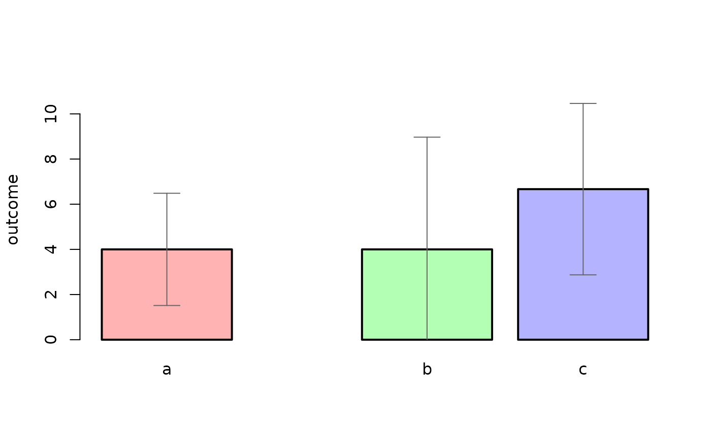
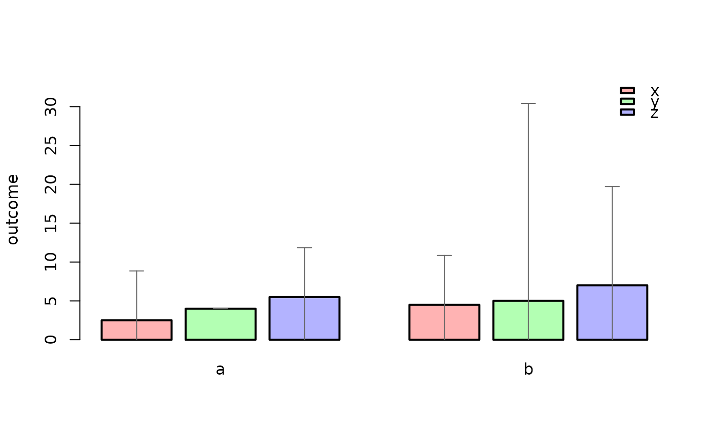

Creates a bar plot showing group means with error bars showing confidence intervals, broken down by one or two grouping factors.
Usage
bars(
formula,
data = NULL,
heightFun = mean,
errorFun = ciMean,
yLabel = NULL,
xLabels = NULL,
main = "",
ylim = NULL,
barFillColour = NULL,
barLineWidth = 2,
barLineColour = "black",
barSpaceSmall = 0.2,
barSpaceBig = 1,
legendLabels = NULL,
legendDownShift = 0,
legendLeftShift = 0,
errorBarLineWidth = 1,
errorBarLineColour = "grey40",
errorBarWhiskerWidth = 0.2
)Arguments
- formula
A two-sided formula of the form
response ~ group1orresponse ~ group1 + group2. The response variable must be numeric; grouping variables must be factors.- data
An optional data frame containing the variables named in
formula. If omitted, the variables are looked up in the workspace.- heightFun
The function used to calculate bar heights. Defaults to
mean. Must return a single number.- errorFun
The function used to calculate error bar positions. Defaults to
ciMean. Must return two numbers (lower and upper bounds). Set toFALSEto suppress error bars.- yLabel
The y-axis label. Defaults to the name of the response variable.
- xLabels
Labels for the x-axis tick marks. Defaults to the levels of
group1.- main
The plot title. Defaults to no title.
- ylim
A numeric vector of length 2 giving the y-axis limits. The lower bound defaults to 0; the upper bound is estimated automatically.
- barFillColour
A vector of colours used to fill the bars. Defaults to a pastel rainbow palette.
- barLineWidth
The width of the bar border lines. Defaults to
2.- barLineColour
The colour of the bar border lines. Defaults to
"black".- barSpaceSmall
The gap between bars within a cluster, as a proportion of bar width. Defaults to
0.2.- barSpaceBig
The gap separating clusters of bars, as a proportion of bar width. Defaults to
1.- legendLabels
Labels for the legend entries. Defaults to the levels of
group2. Set toFALSEto suppress the legend. No legend is drawn when only one grouping variable is specified.- legendDownShift
How far below the top of the plot to place the legend, as a proportion of plot height. Defaults to
0.- legendLeftShift
How far from the right edge to place the legend, as a proportion of plot width. Defaults to
0.- errorBarLineWidth
The line width for the error bars. Defaults to
1.- errorBarLineColour
The colour of the error bars. Defaults to
"grey40".- errorBarWhiskerWidth
The width of the error bar whiskers, as a proportion of bar width. Defaults to
0.2.
Value
Invisibly returns a data frame containing the factor levels, group summary values, and error bar bounds. This function is primarily used for its side effect of drawing the plot.
Details
Plots group means (or the output of heightFun) with error
bars (or the output of errorFun) for one or two grouping factors.
When two grouping factors are given, group1 determines the primary
x-axis grouping and group2 determines the sub-grouping shown as
clusters of bars with a legend.
Missing values are removed with a warning. At least 2 complete cases are required per group.
Examples
# one grouping factor
df <- data.frame(
outcome = c(3, 4, 5, 2, 4, 6, 5, 7, 8),
group = factor(c("a", "a", "a", "b", "b", "b", "c", "c", "c"))
)
bars(outcome ~ group, data = df)
#> Warning: longer object length is not a multiple of shorter object length
#> Warning: longer object length is not a multiple of shorter object length

# two grouping factors
df2 <- data.frame(
outcome = c(3, 4, 5, 2, 4, 6, 5, 7, 8, 4, 3, 6),
group1 = factor(rep(c("a", "b"), each = 6)),
group2 = factor(rep(c("x", "y", "z"), times = 4))
)
bars(outcome ~ group1 + group2, data = df2)
#> Warning: data have zero variance
